10 Perbedaan Introvert, Ekstrovert, dan Ambivert yang Perlu Kamu Tahu, Biar Nggak Asal Sebut
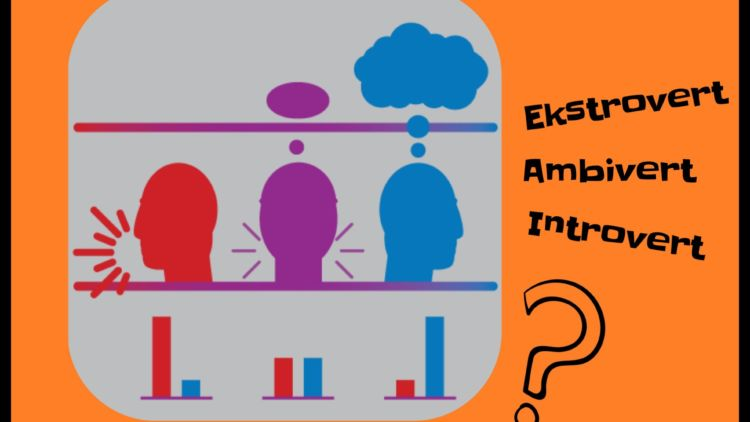Belakangan ini orang sering melabeli diri mereka sebagai introvert, extrovert, atau ambivert. Label itu sering ditemukan di profil media sosial mereka. Malah nggak jarang ada yang mengklaim kepribadian yang satu lebih oke daripada yang lain. Sayangnya, penyebutan ketiga istilah itu seringkali digunakan tanpa pemahaman yang benar. Jadi cuma asal sebut doang gitu…
Kalau secara garis besar, introvert adalah mereka yang cenderung menghindari keramaian karena berinteraksi dengan orang lain bukanlah keahliannya. Sebaliknya, ekstrovert justru selalu mencari keramaian, karena mereka merasa punya power kalau ngobrol dengan orang lain. Uniknya, di dunia ini jarang banget ada yang benar-benar 100% introvert atau 100% ekstrovert. Karena ternyata 2/3 manusia di bumi itu ambivert, atau ada di tengah-tengahnya.
1. Inilah beda introvert, ekstrovert, dan ambivert dilihat dari cara mereka ‘recharge’ energi
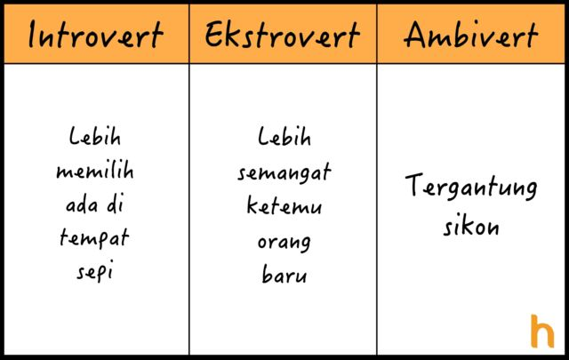2. Kalau ini soal gimana atau apa yang bikin ketiganya bisa sampai lupa diri. Masing-masing punya cara sendiri-sendiri
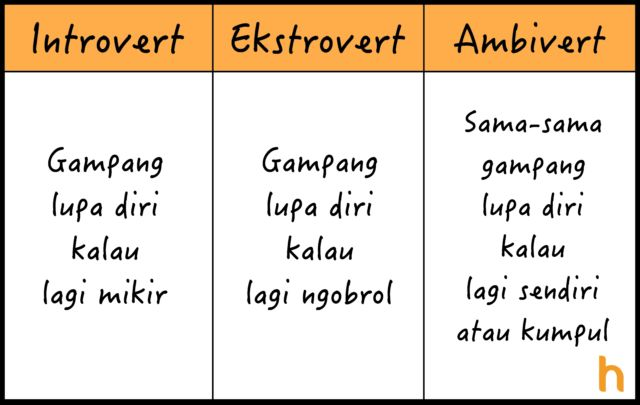3. Sedangkan perbedaan selanjutnya bisa dilihat dari cara masing-masing menghabiskan waktu luang, lebih suka menyendiri, lebih suka cari keramaian, atau kombinasi keduanya
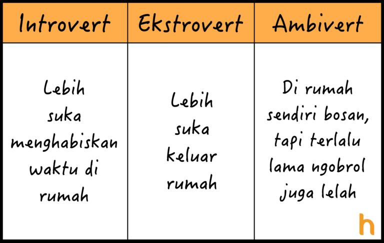4. Ini juga berkaitan sama produktivitas mereka. Orang introvert bakal produktif kalau tempatnya tertutup, kayak di kamar, dll. Tapi ekstrovert justru bakal produktif kalau tempatnya terbuka; misalnya cafe atau kampus
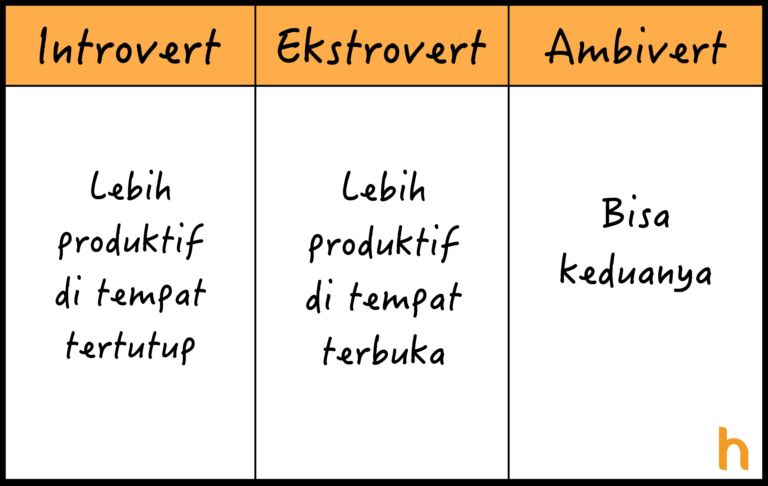5. Kalau dari kebiasaan nugas, introvert cenderung suka mengerjakan sendiri, sebaliknya, ekstrovert lebih pilih kerja kelompok. Kalau bisa keduanya, berarti kamu ambivert
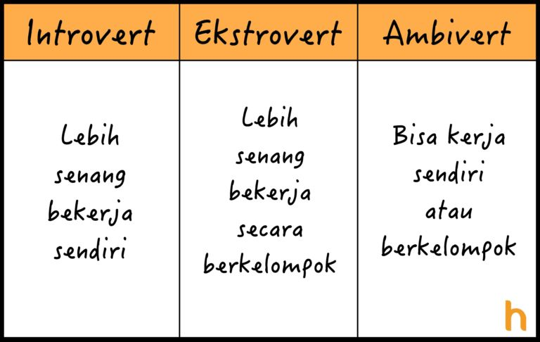6. Orang ekstrovert lebih suka berteman dengan introvert, karena mereka bisa jadi pendengar setia. Tapi belum tentu introvert suka berteman sama ekstrovert lho, haha!
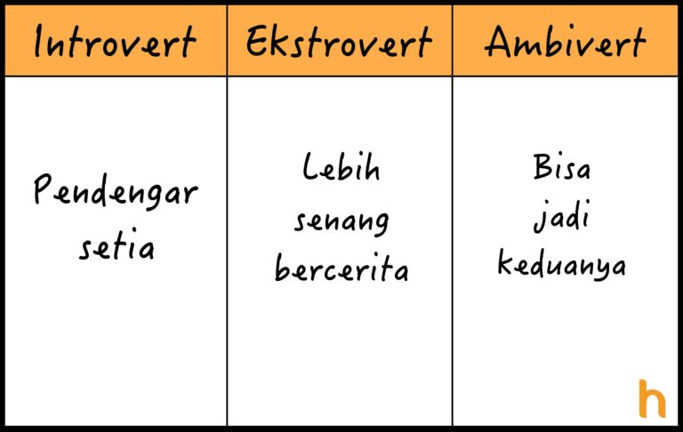7. Orang lain juga bisa menilai kita. Kalau semua orang bilang kamu pendiam, berarti kamu introvert, dan sebaliknya. Tapi kalau ambivert, sebagian bilang kamu pendiam, sebagian lagi bilang kamu bawel di saat-saat tertentu
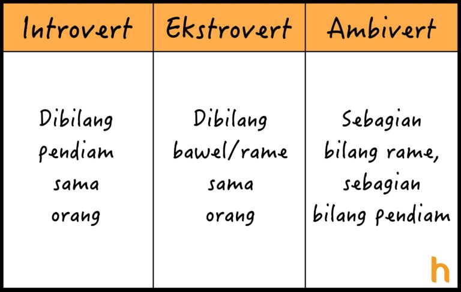8. Kalau pas lagi buka artikel, orang introvert lebih suka baca semua dulu, tujuannya biar paham sebelum komentar. Tapi orang ekstrovert seringkali langsung lompat ke kolom komentar
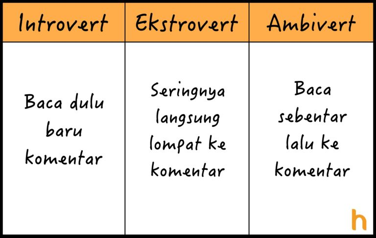9. Sedangkan dilihat dari cara mereka menilai media sosial, ekstrovert melihat media sosial itu sebagai sesuatu yang berharga, makanya sering banget ngecek gadget. Tapi kalau introvert malah cuek bebek
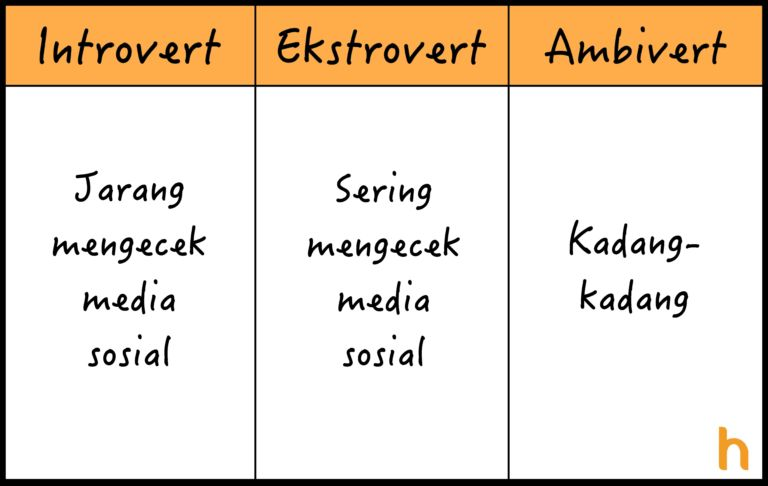10. Nah kalau yang terakhir ini lebih ke ciri fisiknya. Tiap kali sedang berinteraksi dengan sesama, level dopamin introvert cenderung rendah, sebaliknya, si ekstrovert akan lebih tinggi
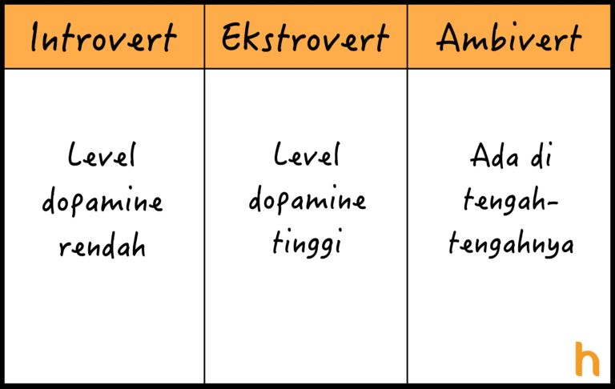


Popular Post